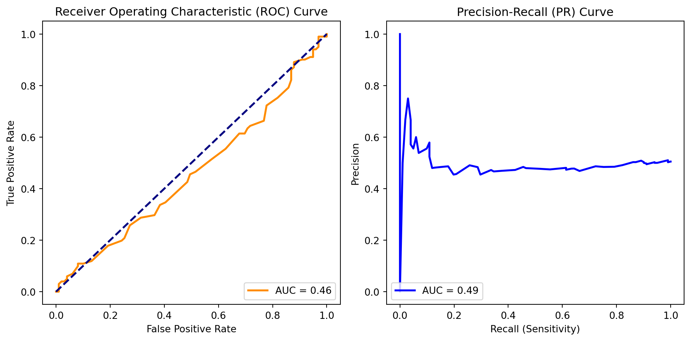

import numpy as np
import pandas as pd
from sklearn.model_selection import train_test_split
from sklearn.ensemble import RandomForestClassifier
from sklearn.metrics import roc_curve, auc, precision_recall_curve, confusion_matrix
import matplotlib.pyplot as plt
#generate synthetic data, features, and labels (binary)
np.random.seed(42)
X = np.random.rand(1000, 5)
y = np.random.randint(2, size=1000)
#train-test split
X_train, X_test, y_train, y_test = train_test_split(X, y, test_size=0.2, random_state=42)
# Using a Random Forest Classifier as an example
clf = RandomForestClassifier(n_estimators=100, random_state=42)
clf.fit(X_train, y_train)
# Make predictions on the test set
y_pred = clf.predict(X_test)
y_prob = clf.predict_proba(X_test)[:, 1]
fpr, tpr, _ = roc_curve(y_test, y_prob)
roc_auc = auc(fpr, tpr)
precision, recall, _ = precision_recall_curve(y_test, y_prob)
pr_auc = auc(recall, precision)
# Generate confusion matrix
conf_matrix = confusion_matrix(y_test, y_pred)Classification is a supervised, meaning labels are given, learning method where a model attempts to predict the correct label of a given input data sample. The models are trained using training data, and then is evaluated and corrected before being used to make predictions on new data. For example, a classification model could be used to detect whether a tumor is cancerous or not based on input data.
Types of Classification Tasks in Machine Learning
Binary classification: The goal here is to determine whether input data is one or another categories. As an example, a model may want to determine whether an email is either spam or not spam.
Multi-class classification: With this category, the goal is to determine what the input data is between at least two, but possibly more, categories. An example could be determining what category a flower falls into between various types of flowers.
Multi-label classification: These tasks attempt to predict 0 or more classes for each input. An input can have more than one label.
Issues Faced in Classification
Imbalanced classification: This issue is faced when the training data is unevenly distributed in each class. Certain models are better at handling imbalanced datasets than others, as they are less biased toward predicting classes with highest number of observations.
Over and Under Fitting: overfitting occurs when the model learns the training data too well, gathering noise and performs poorly when given new data. However, underfitting models are too simple and fail to capture underlying patterns in data.
Noise in Data: Noisy data, with errors or irrelevant information can impact the performance of a classification model. Cleaning the data properly is important to avoid this.
High Dimensionality: Too many features in a dataset causes a model's performance to degrade due to the curse of dimensionality. There are techniques, like principal component analysis, which can help to reduce dimensions while retaining underlying patterns.
Types of Classification in Machine Learning
Lazy Learners: these models store training data and wait for testing data to appear – when it does, classification is conducted based on most related training data. More time is spent on predicting than training. An example of a lazy learner algorithm is the K-nearest neighbor algorithm.
Eager Learners: These models construct a classification model on given training data before testing data is entered. These models take more time to train and less time to predict.
Evaluating Performance
Receiver Operating Characteristic (ROC) curve: This is a graphical representation of a classifier's ability to distinguish between classes by varying the decision threshold. It plots the sensitivity against the false positive rate across various threshold values. Classifiers with higher area under the curve are deemed more effective.
Precision Recall (PR) Curve: Valuable in imbalanced datasets, the PR curve focuses on the trade-off between precision and recall. It illustrates how well a classifier can identify positive instances while maintaining precision. The Area Under the PR Curve (AUC-PR) provides a comprehensive metric for evaluating performance.
Confusion matrix: The confusion matrix offers a breakdown of a classifier’s performance, categorizing predictions into true positives, true negatives, false positives, and false negatives. From the confusion matrix, essential metrics like accuracy, precision, recall, and the F1 score can be derived, providing a nuanced understanding of the model’s strengths and weaknesses.
Classification Demonstration
Visualize Results
# Plot ROC Curve
plt.figure(figsize=(10, 5))
plt.subplot(1, 2, 1)
plt.plot(fpr, tpr, color='darkorange', lw=2, label=f'AUC = {roc_auc:.2f}')
plt.plot([0, 1], [0, 1], color='navy', lw=2, linestyle='--')
plt.xlabel('False Positive Rate')
plt.ylabel('True Positive Rate')
plt.title('Receiver Operating Characteristic (ROC) Curve')
plt.legend(loc='lower right')
# Plot PR Curve
plt.subplot(1, 2, 2)
plt.plot(recall, precision, color='blue', lw=2, label=f'AUC = {pr_auc:.2f}')
plt.xlabel('Recall (Sensitivity)')
plt.ylabel('Precision')
plt.title('Precision-Recall (PR) Curve')
plt.legend(loc='lower left')
plt.tight_layout()
plt.show()
# Display Confusion Matrix
print("Confusion Matrix:")
print(conf_matrix)
Confusion Matrix:
[[37 62]
[45 56]]